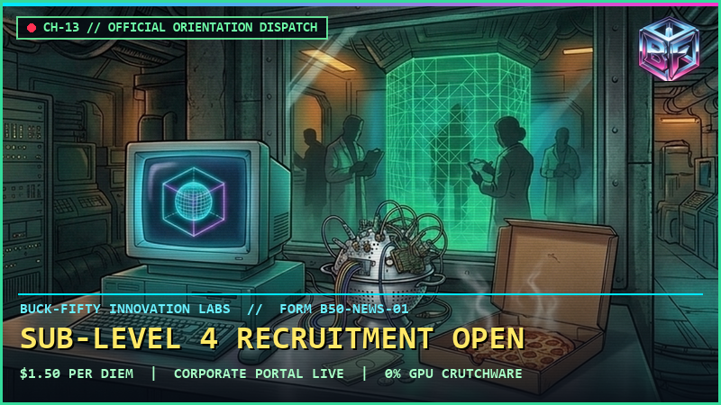
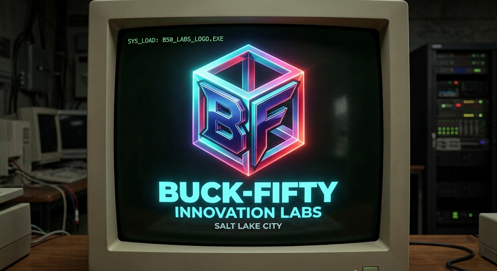
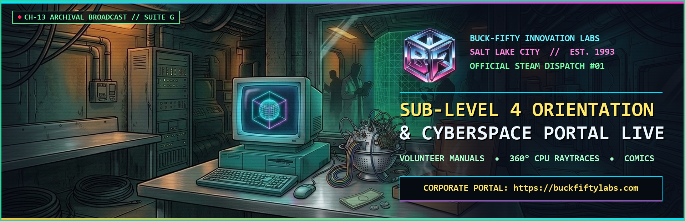
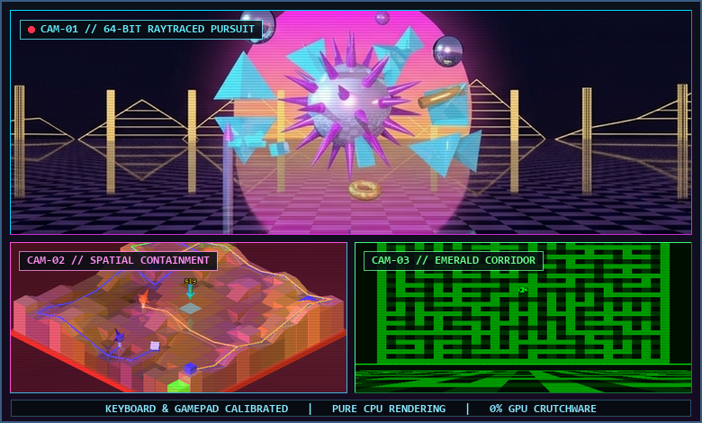
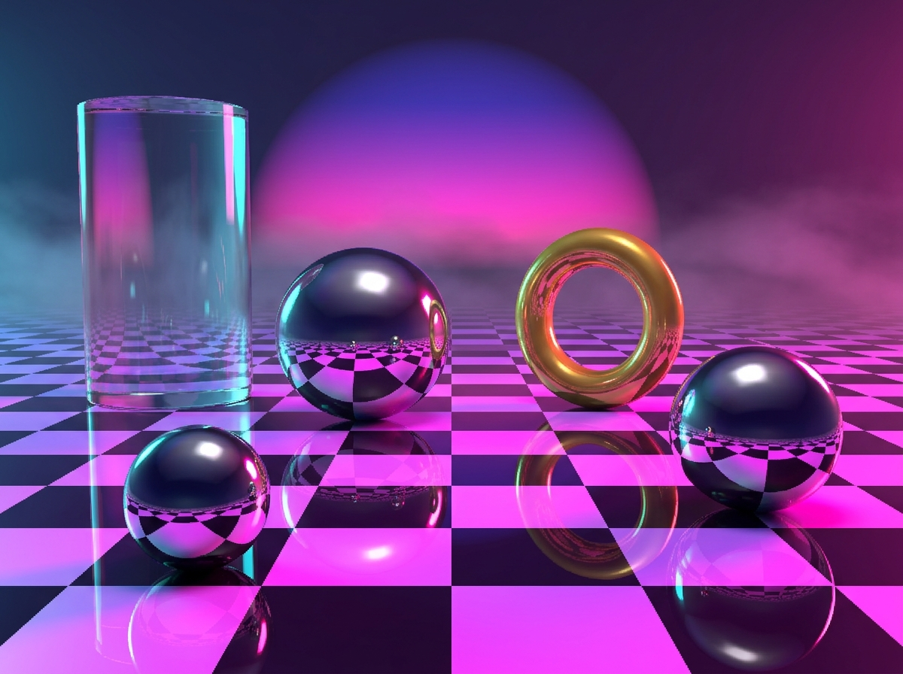

Chase Mode — Fibonacci Spike Sphere Boss
Pure CPU-raytraced 3D pursuit culminating in a boss confrontation over a reflective neon horizon.
1024×768 · PNG
↓ PNG
A $1.50 multi-genre 1990s retro-futuristic arcade escape built from scratch in pure C++17 CPU software rendering (zero GPU required) — spanning 11 playable genres, 5 CRT staff interrogations, 74 FMV broadcasts, and a built-in POV-Ray 3.7 3D turntable studio.

Watermark-free PNG screenshots, transparent logos, key art banners, POV-Ray renders, and plain-text fact sheets ready for immediate editorial use.
Everything in one archive: all 16 full-res screenshots, 13 logos/key art/renders, plus Fact Sheet (.txt & .md).
Curated high-resolution gameplay captures spanning every major 3D, CRT, maze, stealth, racing, and interrogation mode.
Transparent wordmark, square cube icon, CRT splash, 1920×622 & 800×450 key art, showcase collages, and POV-Ray stills.
Clean, copy-ready descriptions sized for news briefs, Steam roundups, and full features.
A $1.50 multi-genre 1990s retro-futuristic arcade escape built entirely in pure C++17 CPU software rendering (zero GPU required), spanning 11 playable genres, 5 CRT staff interrogations, 74 FMV clips, and an actual built-in POV-Ray 3.7 3D turntable studio.
Artsy_2000 casts you as Subject 13 inside Buck-Fifty Innovation Labs' Sub-Level 4 — a satirical 1996 Salt Lake City cognitive research bunker promising volunteers a $1.50 per diem and one personal pan pizza voucher. Built from scratch in pure C++17 and Win32/GDI with zero GPU dependencies, the game shifts seamlessly across 11 interconnected retro genres: CPU-raytraced 3D pursuits, Mode-7 highways, emerald phosphor mazes, 90s point-and-click brain surgery, 3D pipe hypercubes, satellite triangulation over real Utah USGS imagery, top-down stealth, and timed CRT staff interrogations — culminating in a secret 3D raytracer sculptor that exports genuine POV-Ray 3.7 360-degree turntable animations.
Set in 1996 inside the subterranean chambers of fictional Salt Lake City institute Buck-Fifty Innovation Labs, Artsy_2000 begins as a seemingly routine cognitive hardware evaluation hosted by unsettlingly cheerful Clinical Director Dr. Brad Vance. After your test scores trigger an immediate "cranial harvest" directive, the evaluation turns into a frantic, genre-hopping escape through the facility's hardware terminals, ventilation shafts, and desert perimeter.
Rather than mimicking retro visuals on a modern game engine, Artsy_2000 is engineered from the ground up in pure C++17 and Win32/GDI software rendering — with zero DirectX, OpenGL, or Vulkan calls anywhere in the codebase. Every 3D Phong reflection, Mode-7 ground projection, curved CRT glass distortion, wireframe corridor, and isometric raytraced arena is computed natively on multi-threaded CPU cores.
Between playable trials, players watch archival live-action and 1990s broadcast FMV clips (74 video clips in total, including 50 satirical TV Break commercials and secret VHS glitch folders), bluff five suspicious facility staff members over curved CRT interrogation terminals, and unlock Ascend Mode — a real-time 3D raytracer scene editor with integrated Eric Haines Standard Procedural Database (SPD) generation and one-click export to authentic POV-Ray 3.7 360° turntable animations.
While modern PC releases demand multi-hundred-dollar GPUs and massive shader caches, Artsy_2000 computes every raytraced bounce, Mode-7 horizon, and CRT scanline purely on CPU threads via Win32/GDI.
Buck-Fifty Innovation Labs promises volunteers "$1.50 per diem and a personal pan pizza voucher." The full Steam release matches the joke literally at $1.50 USD — packing 11 genres, 74 FMVs, and 153 achievements.
Paying tribute to Salt Lake City's foundational computer-graphics history (the Utah Teapot) and 1990s raytracing hobbyists, players can export their in-game 3D sculptures straight into real POV-Ray SDL scripts and 360° turntable renders.
The game ships alongside a deliberately garish 1996 corporate website (buckfiftylabs.com), a 46-page Xeroxed Volunteer Survival Manual PDF, two full-color graphic novels (including a printed Amazon paperback), and a hidden level-Omega vault.
Approved for embedding in articles, roundups, and video reaction coverage.
Companion documentary exploring the history and mathematics of CPU raytracing and POV-Ray behind Artsy_2000.
Historical featurette on Salt Lake City's pioneering 3D computer graphics heritage that inspired Buck-Fifty's setting.
All captures are native 1024×768 PNGs straight from the pure-CPU renderer. Click any shot to inspect full-size or download individually.
Toggle preview backgrounds below to check alpha transparency for thumbnails and headers.










Artsy_2000 weaves 11 distinct gameplay genres, 5 timed CRT interrogations, and unlockable bonus studios into a single escalating escape.
High-speed software-rendered ground pursuit across mirrored wireframe landscapes, chain enemies, and the Fibonacci Spike Sphere boss fight.
Monochrome green phosphor dual-snake showdown against rogue Sub-Level 4 AI Daemon 0x0666, also unlocked as Local 2-Player PvP.
14×14 stepped raytraced isometric grid with 5 elevations, R/G/B sentinel drones, tactical focus-time gadgets, and a 3-lane Panic Highway escape.
Classic 8-verb operating theater adventure with 64 surgical tools, narcotic arrow drift, EMP shocks, and a hidden typing breakout sequence.
Interactive CPU raytracer with Phong reflections, rigid-body geometric ammo charging, and a vertical monolith climb toward the Horizon Sphere.
First-person emerald wireframe maze paired with an active ECG heart-rate monitor, scanline sprite catching, and visceral Guts decompression.
High-speed orbital navigation along an aluminum pipe network spanning all six faces of a folded 3D hypercube with a detached orbital overview camera.
Multi-resolution orbital satellite triangulation over public-domain USGS/USDA Utah imagery to pinpoint Site Alpha-4 before the satellite pass expires.
Architectural cyan schematic maze with graphite scanlines, rubberstamp pen catching, a 3D raytraced lobby tour, and instant POV-Ray export.
23-second stealth dash past patrolling scientists to the getaway car — warping into a medieval Dark Ages RPG hallucination when oxygen runs low.
OutRun-inspired 5-lane desert highway run featuring traffic dodges, roadside diners, brick-wall barriers, and a cosmic pepperoni skybox.
Out-bluff five distinct staff members — Prep Orderly, Dr. Sterling, Triage Officer, Pipe Tech, and the Bella Rosa Pizza Guy — before suspicion maxes out.
uint32_t* BGRA framebuffers) with zero DirectX, OpenGL, or Vulkan dependencies.resources.bin).Six original full-length synthwave compositions by artist Holon, streaming continuously via XAudio2 with automatic FMV ducking.
Buck-Fifty Innovation Labs / Daniel Sawitzki explicitly grants press outlets, reviewers, YouTubers, Twitch streamers, and independent creators permission to record, stream, publish, and monetize (via ad revenue, sponsorships, subscriptions, and tips) gameplay footage, reviews, critiques, tutorials, and articles featuring Artsy_2000 and all visual assets provided in this press kit.
Soundtrack Courtesy Note: The original soundtrack by Holon is licensed for embedded distribution inside Artsy_2000. Creators are welcome to keep in-game music enabled during gameplay coverage and livestreams; crediting Holon (holon-subatomic-audio.bandcamp.com) in descriptions is appreciated.